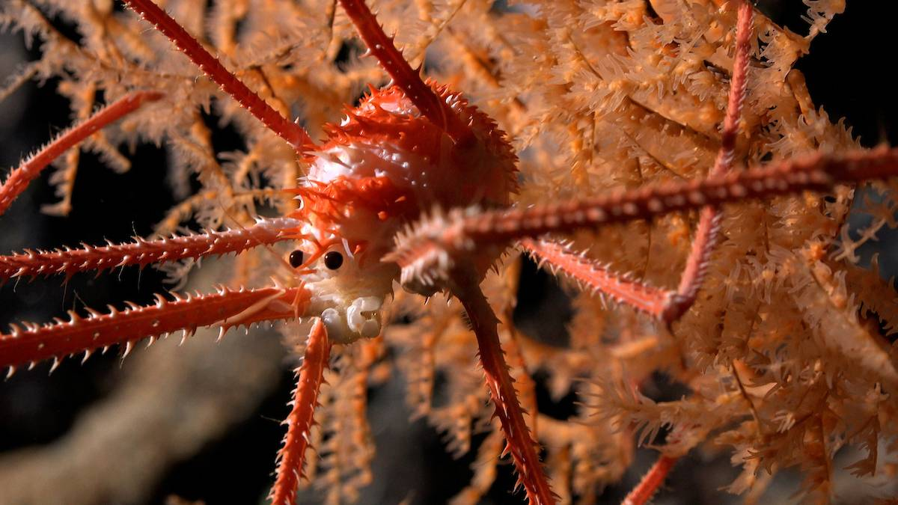

100 nuevas especies encontradas en las profundidades del mar de Chile

Un equipo internacional de investigadores ha explorado estos ecosistemas vulnerables de las profundidades marinas y observado más de 100 especies nunca antes registradas por los científicos.
Un grupo internacional de científicos, dirigido por Javier Sellanes de la Universidad Católica del Norte (Chile), ha descubierto más de 100 nuevas especies que viven en los montes submarinos frente a las costas de Chile. La reciente expedición del Schmidt Ocean Institute dio como resultado la identificación de corales de aguas profundas, esponjas de vidrio, erizos de mar, anfípodos, langostas y otras especies probablemente nuevas para la ciencia.
El equipo exploró los montes submarinos a lo largo de las dorsales deNazca y Salas y Gómez, tanto dentro como fuera de la jurisdicción de Chile, para recopilar datos que pudieran respaldar la designación de un área marina protegida internacional en alta mar.
Una langosta en cuclillas documentada en coral a 669 metros de profundidad en el monte submarino JF2. / ROV SuBastian / Schmidt Ocean Institute
La Cordillera Salas y Gómez es una cadena montañosa submarina de 2.900 kilómetros de largo que comprende más de 200 montes submarinos que se extienden desde la costa de Chile hasta Rapa Nui, también conocida como Isla de Pascua. Además, los investigadores exploraron dos de las áreas marinas protegidas de Chile, los parques marinos Juan Fernández y Nazca-Desventuradas.
Durante la expedición se utilizó un robot submarino capaz de descender a 4.500 metros de profundidad, para recopilar datos de diez montes, información que se utilizará para avanzar en los esfuerzos de protección marina de Chile. Cada monte submarino albergaba ecosistemas distintos, muchos de los cuales son vulnerables, incluidos prósperos arrecifes de coral de aguas profundas y jardines de esponjas. Además, están analizando la fisiología y genética de los especímenes que sospechan desconocidos para confirmar si se trata de especies nuevas.